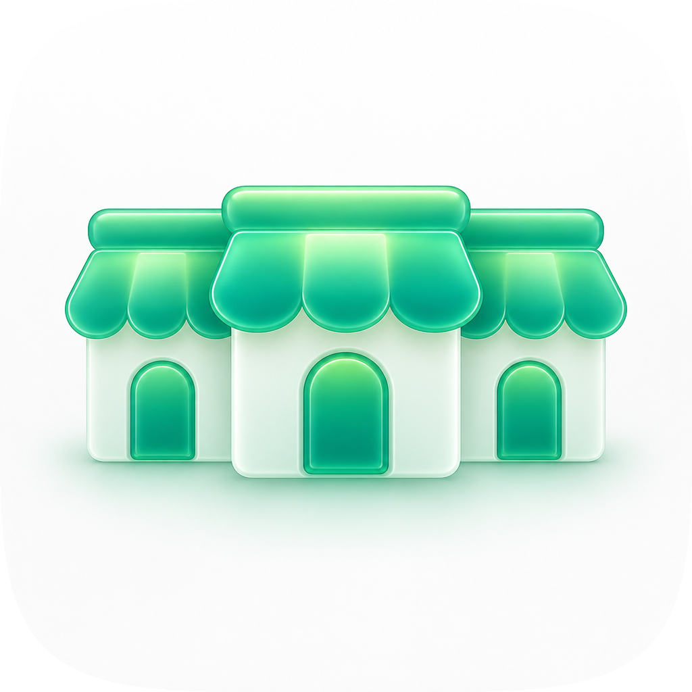
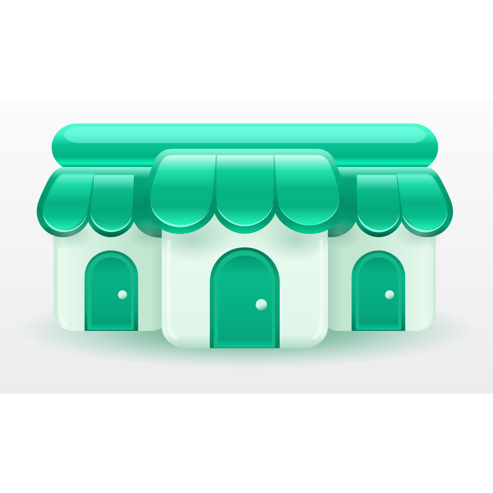
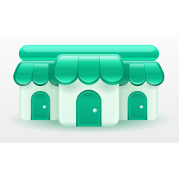
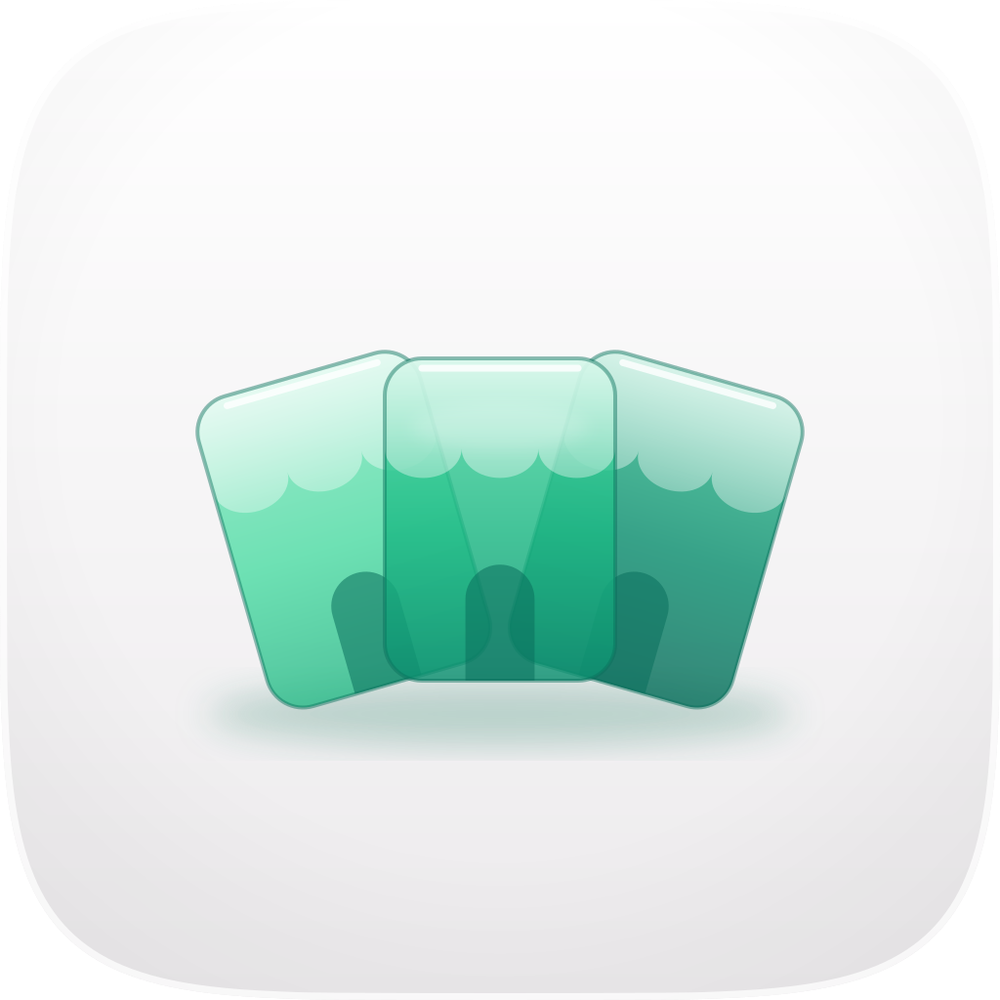
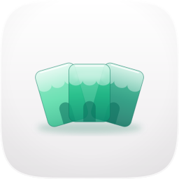
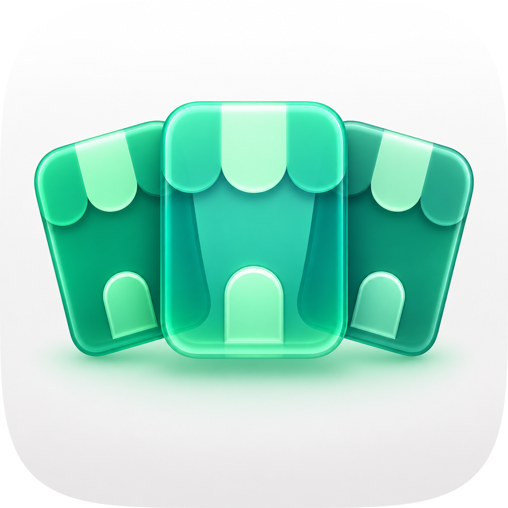
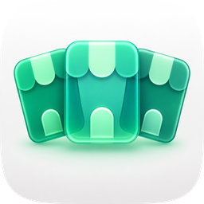
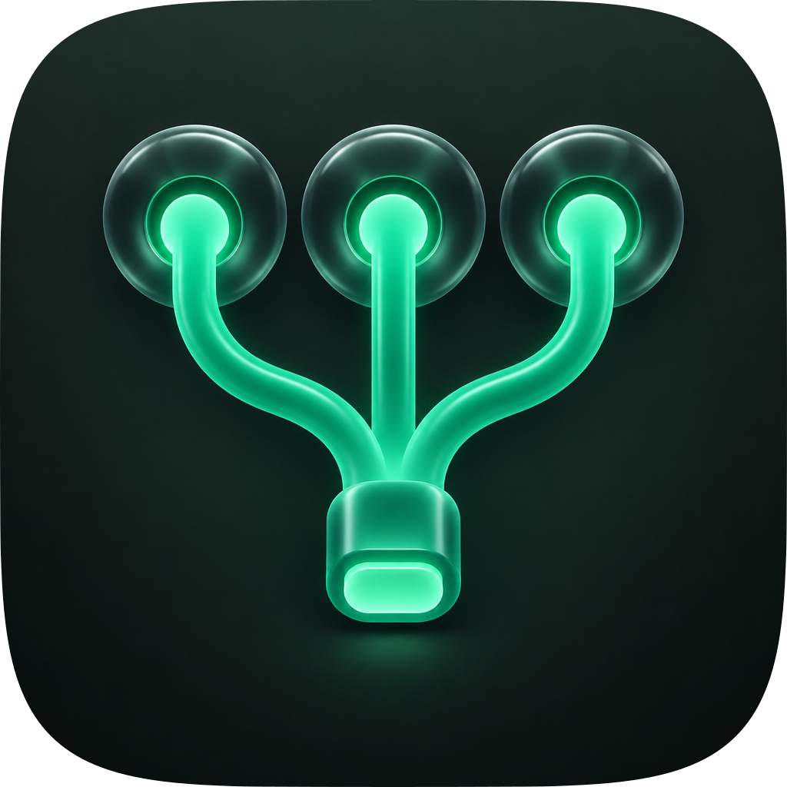
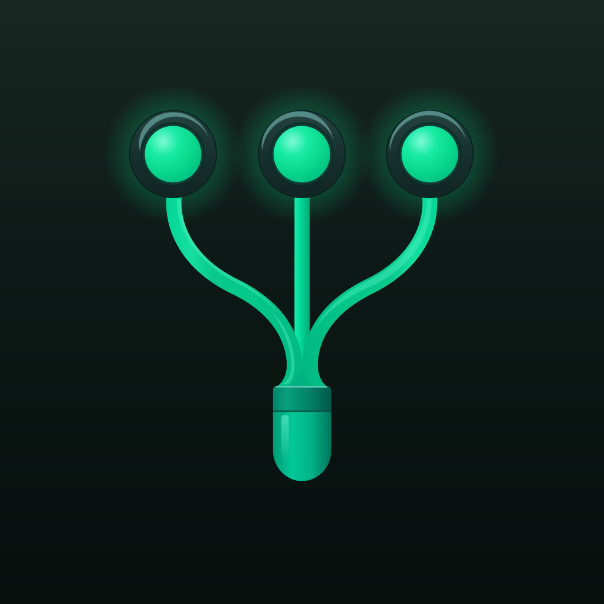
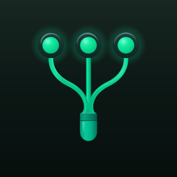

| Take | Hero at 1024, then renders at 128 / 64 / 48 / 32 / 16 css px (2× retina sources), plus the 16px squint magnified | Rubric | Verdict |
|---|---|---|---|
| engineA-tagring · icon-engineA-tagring.svgEngine A, hand-built layered SVG, ships. Below 96px it ships from icon-engineA-tagring-small.svg |  |
11 / 12 | Passes checks 1-4 on real renders: the shared squircle, one ring with three tags that says 'several stores on one key ring', and the small-size file keeps a two-pixel ring hole and three separate tags at 16px. Four refinement rounds against the raster take moved it closer each time (the tags fan out so every shop symbol shows; tube ring; clay depth; cast shadows), and two outside judges, shown both orders blind, preferred it to the starting version. Misses variant robustness: the pale right tag is the weakest figure on the porcelain ground and no dark or tinted variant has been drawn yet. |
| engineC-tagring-1dc36a-masked · icon-engineC-tagring-1dc36a-masked.pngEngine C raster, corpus-referenced. The material target for the master | 9 / 12 | The best material in the set (soft clay tags, a real tube ring, links that loop through each tag's hole) and it set the bar the master was scored against. Fails check 4: at 16px the three tags merge into one green mass under the ring. A raster cannot ship as the layered master, so it stays the reference. | |
| engineB-tagring-6f6d21 · icon-engineB-tagring-6f6d21.svgEngine B vector take | 7 / 12 | Fails check 1: the artwork is a non-square full-bleed picture with no squircle, so it renders as a white rectangle beside squircle siblings. The holes, rings and shop symbols are drawn at a size that turns to noise below 64px. Its ring-and-links arrangement was salvaged into the master. | |
| master · icon.svgThe incumbent master: a row of three shopfronts (what ships today) |    |
10 / 12 | Clears the bar: correct squircle, a readable row of awnings at 16px, one light. Lost to the tag ring on depth coherence (a flat front elevation) and era fit: it reads as a generic shop icon and says nothing about holding several stores together. |
| engineC-shopfront-9fb7f0-masked · icon-engineC-shopfront-9fb7f0-masked.pngEngine C raster, the incumbent's material reference |    |
10 / 12 | Good clay material and a clean 16px row of awnings. Misses focal sizing (a wide, short strip leaves the top third of the tile empty) and figure-ground (pale facade on a pale ground). Same weakness as the incumbent: a shop, not several shops held together. |
| engineB-shopfront-b9b0db · icon-engineB-shopfront-b9b0db.svgEngine B vector take |       |
7 / 12 | Fails check 1: full-bleed square with no squircle. The strip of shopfronts sits small in the middle of the tile and the doors disappear at 32px. |
| engineA-fanned · icon-engineA-fanned.svgEngine A, hand-built layered SVG |   |
9 / 12 | Three translucent shopfront cards fanned on porcelain. Fails check 4: at 16px the cards fuse into one pale green bar, and the glass-on-porcelain contrast is too low to rescue it. Misses focal sizing too. |
| engineC-fanned-a6eaa6-masked · icon-engineC-fanned-a6eaa6-masked.pngEngine C raster, corpus-referenced |   |
9 / 12 | Convincing glass cards with real depth. Fails check 4: at 16px the fanned cards read as a crown. Misses texture restraint (busy highlights on every card edge). |
| engineB-fanned-8d4926 · icon-engineB-fanned-8d4926.svgEngine B vector take | 7 / 12 | Fails check 1: full-bleed square. The cards crop at the tile edge and blur together at 32px. | |
| engineB-fanned2-82408e · icon-engineB-fanned2-82408e.svgEngine B vector take (second run) | 7 / 12 | Fails check 1 for the same reason as the first run, and adds a white ground that leaves the cards floating with no contact shadow. | |
| engineA-labelled · icon-engineA-labelled.svgEngine A, hand-built layered SVG | 10 / 12 | A chat bubble whose three coloured pills stand for store labels; it reads cleanly at 16px. Clears the bar but lost on distinctiveness: a chat bubble on green is the default mark for any messaging or AI app, and the store idea lives only in three small pills. Misses depth coherence and variant robustness. | |
| engineC-labelled-50157c-masked · icon-engineC-labelled-50157c-masked.pngEngine C raster, corpus-referenced | 8 / 12 | Fails check 1: the image generator painted its own rounded tile inside the squircle, so a tile sits inside a tile. Good bubble material otherwise. | |
| engineB-labelled-3f597a · icon-engineB-labelled-3f597a.svgEngine B vector take | 8 / 12 | Fails check 1: full-bleed square. The bubble itself holds up at 16px. | |
| engineB-labelled2-5ac308 · icon-engineB-labelled2-5ac308.svgEngine B vector take (second run) | 8 / 12 | Fails check 1: full-bleed square. Nearly identical to the first run; the bubble is a little larger. | |
| engineA-switchboard · icon-engineA-switchboard.svgEngine A, hand-built layered SVG | 9 / 12 | Three glowing store nodes joining one plug. Fails check 3: the silhouette reads as a git branch or network diagram before it reads as stores. The dark stem also loses to the dark ground at 32px. | |
| engineC-switchboard-6edb40-masked · icon-engineC-switchboard-6edb40-masked.pngEngine C raster, corpus-referenced |  |
9 / 12 | Fails check 3 like the vector version, and misses texture restraint: the glow halos fill the tile. |
| engineB-switchboard-2b52e5 · icon-engineB-switchboard-2b52e5.svgEngine B vector take |   |
6 / 12 | Fails checks 1 and 4: full-bleed square, and the thin stems vanish below 64px, leaving three dots. |
| engineA-monogram · icon-engineA-monogram.svgEngine A, hand-built layered SVG | 10 / 12 | A shopfront awning over a bold M on ink green; the strongest 16px read in the set. Clears the bar but lost on meaning: a letter mark only works once people know the name, and the name leads with 'shopify', not M. Misses depth coherence and single light model (the awning and letter are lit differently). | |
| engineC-monogram-812b2f-masked · icon-engineC-monogram-812b2f-masked.pngEngine C raster, corpus-referenced | 8 / 12 | Fails check 1: a painted inner tile sits inside the squircle. The frosted M has lovely material but reads as 'M' with a hat. | |
| engineB-monogram-2bdc41 · icon-engineB-monogram-2bdc41.svgEngine B vector take | 7 / 12 | Fails check 1: full-bleed square. The notch cut into the M makes it read as a V at 32px. |